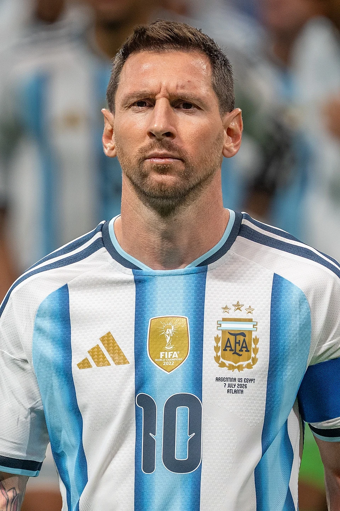

О футболисте

Лионель Месси — аргентинский футболист, нападающий клуба «Интер Майами» и капитан сборной Аргентины. Его считают одним из лучших футболистов в истории: он рекордсмен по числу «Золотых мячей» и лучший бомбардир в истории «Барселоны» и сборной Аргентины. В 2022 году он стал чемпионом мира, а в 2026-м снова довёл сборную до финала чемпионата мира.
Основные факты
- Дата рождения: 24 июня 1987 года, Росарио
- Страна: Аргентина
- Позиция: нападающий
- Номер: 10
Клубы
| Годы | Клуб | Голы |
|---|---|---|
| 2004–2021 | Барселона | 672 |
| 2021–2023 | ПСЖ | 32 |
| 2023 – н.в. | Интер Майами | 90+ |
Главные достижения
- Чемпион мира 2022 года
- Двукратный победитель Копа Америка (2021, 2024)
- 4 раза выигрывал Лигу чемпионов с «Барселоной»
- 8 «Золотых мячей» — это рекорд
- Серебро чемпионата мира 2026